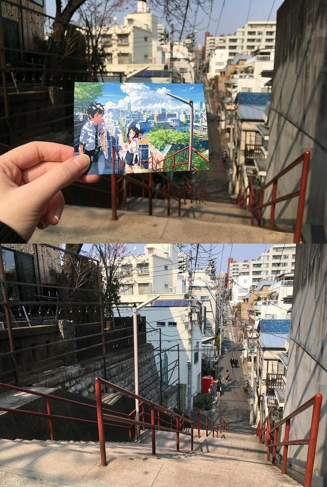
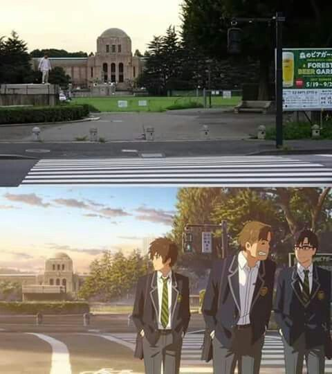
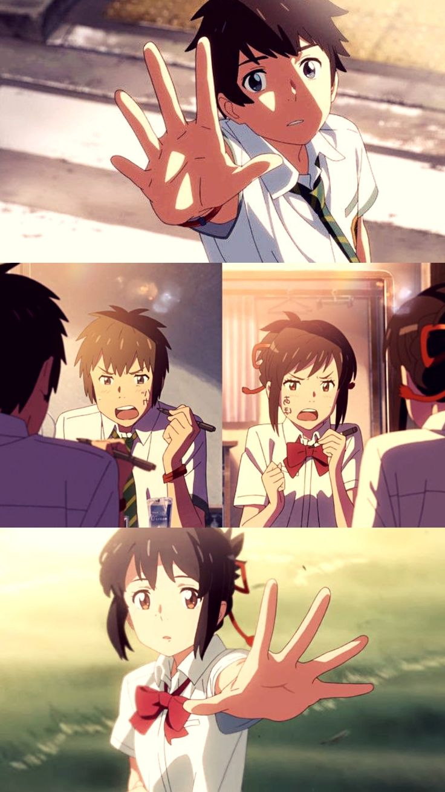

"Your Name" é uma história envolvente que se desenrola em torno de dois adolescentes japoneses, Mitsuha e Taki. Mitsuha vive em uma pequena cidade rural, enquanto Taki mora em Tóquio. Inexplicavelmente, eles começam a trocar de corpos periodicamente, vivendo a vida um do outro por um período de tempo antes de retornarem às suas vidas normais.
¶Inicialmente confusos e surpresos com essa experiência, Mitsuha e Taki começam a deixar mensagens um para o outro, registrando suas experiências e tentando ajudar um ao outro a navegar pelas complexidades de suas vidas. Ao longo do tempo, eles desenvolvem uma conexão profunda, apesar de nunca se encontrarem pessoalmente.
¶Conforme a história avança, eles descobrem que suas trocas de corpo estão ligadas a eventos misteriosos envolvendo um cometa que passa pela Terra. Com o tempo, eles percebem que suas vidas estão entrelaçadas de maneiras mais profundas do que jamais imaginaram.
¶O filme aborda temas como amor, destino, memória e identidade, enquanto Mitsuha e Taki lutam para entender a natureza de suas experiências e encontrar uma maneira de se reconectar. O clímax do filme traz uma reviravolta emocionante que desafia as fronteiras do tempo e espaço, enquanto os personagens lutam para se reunir e enfrentar os desafios que se apresentam.
¶"Your Name." é uma jornada emocionante e visualmente deslumbrante, que cativa o público com sua história única e personagens carismáticos, deixando uma impressão duradoura sobre aqueles que o assistem.
Interesses intrigantes sobre o filme
O filme "Your Name." possui diversos elementos interessantes e intrigantes que cativam o público, gerando as emoções mais intensas e arrepiantes. Entre elas:
• Troca de Corpos: O conceito central da troca de corpos entre os protagonistas, Mitsuha e Taki, é fascinante e único. A maneira como eles lidam com essa situação incomum, aprendendo a viver na pele um do outro, enquanto tentam manter suas próprias identidades, é tanto divertida quanto reflexiva. ♦
• Mistério e Revelações: O enredo envolve vários mistérios e reviravoltas, especialmente em relação à natureza da troca de corpos e às razões por trás dela. À medida que a história avança, o filme revela gradualmente segredos intrigantes que mantêm o espectador envolvido e ansioso por mais informações. ♦
• Conexões Além do Tempo e Espaço: Uma das partes mais fascinantes do filme é como ele explora a ideia de conexões emocionais que transcendem as fronteiras do tempo e espaço. Mitsuha e Taki estão ligados de maneiras surpreendentes, mostrando que o destino pode unir pessoas de maneiras inesperadas e profundas. ♦
• Visual Deslumbrante: A animação de "Your Name." é absolutamente deslumbrante. Os cenários são ricamente detalhados, os efeitos visuais são impressionantes e a direção de arte é incrivelmente bela. Cada cena é um espetáculo visual que contribui para a imersão na história. ♦
• Trilha Sonora Cativante: A música desempenha um papel significativo no filme, contribuindo para sua atmosfera e emocionando o público em momentos-chave da narrativa. A trilha sonora original é emocionante e complementa perfeitamente as cenas, aumentando o impacto emocional da história. ♦
Esses elementos combinados tornam "Your Name." uma experiência cinematográfica verdadeiramente cativante e memorável, que continua a intrigar e encantar espectadores em todo o mundo.
Contexto histórico e referências no filme
O contexto histórico real por trás do roteiro e enredo de "Your Name." não é explicitamente abordado no filme, já que a narrativa se concentra principalmente nos aspectos fantásticos da troca de corpos e nas relações pessoais entre os personagens. No entanto, é possível identificar alguns elementos culturais e históricos que podem ter influenciado o filme:
•Terremoto e tsunami de 2011 no Japão: Embora não seja diretamente mencionado no filme, o terremoto e tsunami que atingiram o Japão em 2011 tiveram um impacto significativo na sociedade japonesa e podem ter influenciado sutilmente a atmosfera do filme. A devastação causada por esse desastre natural trouxe à tona temas de superação, reconstrução e conexão comunitária, que podem ressoar de alguma forma na história de "Your Name."
•Contrastes entre vida rural e urbana: O contraste entre a vida na cidade e no campo é um tema recorrente em muitas obras japonesas, incluindo anime e cinema. Em "Your Name.", essa diferença é destacada pela troca de corpos entre Mitsuha, que vive em uma cidade rural, e Taki, que reside em Tóquio. Essa dicotomia reflete a realidade da vida no Japão, onde existe uma clara divisão entre o estilo de vida urbano e rural.
•Simbolismo cultural: O filme também incorpora elementos de simbolismo cultural japonês, como o cometa Tiamat, que desempenha um papel importante na trama. Os cometas têm significados simbólicos na mitologia japonesa e são frequentemente associados a eventos transcendentais ou transformadores.
Embora "Your Name." seja principalmente uma obra de ficção e fantasia, sua ambientação e alguns temas podem ser influenciados pelo contexto histórico e cultural do Japão contemporâneo. No entanto, é importante notar que o filme não se propõe a ser uma representação precisa de eventos históricos, mas sim a criar uma história emocionante e envolvente que ressoa com o público.
A relação entre o cometa que atinge a cidade e o enredo do filme
No filme "Your Name.", o cometa que desempenha um papel significativo na história é chamado de Tiamat. O cometa Tiamat é um evento central que ocorre na cidade fictícia de Itomori, onde a personagem Mitsuha vive. Leia agora um resumo sobre a história no filme:
•Itomori, a cidade rural onde Mitsuha reside, é marcada por uma tragédia que ocorreu há três anos antes do início da história do filme. Nessa tragédia, um fragmento do cometa Tiamat atingiu a cidade, resultando em uma devastação significativa, incluindo muitas mortes e destruição generalizada.
•Essa tragédia é um evento importante que afeta não apenas o enredo do filme, mas também os personagens principais. Mitsuha, que vive em Itomori, sente a carga emocional dessa tragédia em sua vida cotidiana. A memória da tragédia e a maneira como ela afetou a cidade e suas pessoas são elementos importantes que moldam a jornada dos personagens.
A queda do cometa
A metáfora do fio vermelho
No filme "Your Name.", o fio vermelho é uma metáfora que simboliza a ligação emocional entre os personagens principais, Mitsuha e Taki. Embora não seja um elemento literal da história, o conceito do fio vermelho está presente como uma representação poética do destino e do amor que une os dois protagonistas.
»A ideia do fio vermelho está enraizada na cultura asiática, especialmente na China e no Japão, onde é frequentemente considerada uma metáfora para os laços pré-determinados entre as almas gêmeas. Acredita-se que duas pessoas destinadas a estar juntas são conectadas por um fio vermelho invisível, que pode esticar ou encurtar, mas nunca se quebrar.
»Em "Your Name.", essa metáfora é explorada através da conexão misteriosa e inexplicável entre Mitsuha e Taki. Apesar de estarem separados por distância e circunstância, os dois personagens sentem uma ligação profunda e inexplicável um pelo outro, que transcende o tempo e o espaço. Essa ligação é simbolizada pelo fio vermelho invisível que une suas almas, guiando-os em direção um ao outro, mesmo quando estão separados.
»Ao longo do filme, o fio vermelho serve como um lembrete constante da ligação especial entre Mitsuha e Taki, enquanto eles lutam para entender e reconciliar suas experiências compartilhadas. Ele representa a força do destino e do amor verdadeiro que os une, apesar dos desafios e obstáculos que enfrentam ao longo da história.
Opinião crítica sobre o filme
O filme "Your Name." recebeu uma recepção extremamente positiva da crítica e do público em geral. Aqui estão algumas das principais críticas positivas que o filme recebeu:
»Narrativa Cativante: A história envolvente e original do filme, que combina elementos de fantasia, romance e drama, foi amplamente elogiada. A maneira como a narrativa explora temas como amor, destino e identidade ressoou com muitos espectadores, que se sentiram emocionalmente investidos na jornada dos personagens.
»Animação Deslumbrante: A qualidade visual e a animação impressionante de "Your Name." foram destacadas como alguns dos pontos mais fortes do filme. Os cenários detalhados, os efeitos visuais impressionantes e os designs de personagens cativantes contribuíram para uma experiência cinematográfica visualmente deslumbrante.
»Trilha Sonora Memorável: A trilha sonora original do filme, composta por Radwimps, recebeu elogios por sua emotividade e capacidade de aprimorar a atmosfera e as emoções das cenas. As músicas do filme, incluindo "Nandemonaiya" e "Zenzenzense", tornaram-se queridas pelos fãs e contribuíram significativamente para a identidade do filme.
»Mensagens Temáticas Profundas: Além de sua história envolvente, "Your Name." também foi elogiado por transmitir mensagens temáticas profundas sobre conexão humana, destino e a importância de apreciar o momento presente. O filme provocou reflexões sobre a natureza efêmera da vida e a importância de valorizar os relacionamentos interpessoais.
»Impacto Cultural e Global: "Your Name." foi amplamente aclamado não apenas no Japão, onde se tornou um dos filmes de anime de maior bilheteria de todos os tempos, mas também internacionalmente. O filme ajudou a aumentar a popularidade do anime e a atrair uma base de fãs global, consolidando seu lugar como uma obra-prima do cinema de animação.
No geral, a crítica sobre "Your Name." foi extremamente positiva, destacando sua narrativa envolvente, animação deslumbrante e mensagens temáticas profundas como os principais pontos fortes do filme.
Representação e referências da realidade na animação
o filme "Your Name." apresenta várias referências a cenários e locais reais no Japão. Embora a história seja em grande parte fictícia e se passe em cidades fictícias, como Itomori e Tóquio, o diretor Makoto Shinkai incorporou elementos de locais reais em sua animação para adicionar autenticidade e familiaridade à ambientação do filme. Veja algumas das referências a cenários reais:
»Tóquio: Muitas cenas do filme ocorrem na cidade de Tóquio, e algumas delas apresentam locais conhecidos da capital japonesa, como o bairro de Shinjuku, a estação de trem de Shibuya e o edifício Tokyo Metropolitan Government Building. Essas representações são fiéis à aparência e atmosfera dos locais reais.
»Lago Suwa: O lago que aparece no filme é baseado no Lago Suwa, localizado na prefeitura de Nagano, no centro do Japão. Este lago é conhecido por ser o cenário de muitas lendas e mitos japoneses, o que se alinha bem com o tema do destino e da conexão espiritual presente em "Your Name."
»Gifu Prefecture: Itomori, a cidade natal de Mitsuha, é modelada após várias cidades e vilarejos na região de Gifu, no Japão. Embora não seja uma representação direta de uma cidade específica, a arquitetura, paisagem e cultura de Itomori são inspiradas em lugares reais em Gifu.
»Observatório de Musubi: No filme, há uma cena importante que ocorre em um observatório. Embora não seja explicitamente identificado, o Observatório de Musubi é baseado no Observatório Hida, localizado na cidade de Takayama, em Gifu. Esta é uma das referências mais diretas a um local real no filme.
Essas são apenas algumas das referências a cenários reais no filme "Your Name.", que ajudam a criar uma sensação de autenticidade e familiaridade para o público japonês e para os espectadores familiarizados com esses locais.


Comparações com o cenário real
O desfecho final de Kimi no Na wa
O final do filme "Your Name." é emocionante e surpreendente, envolvendo uma série de reviravoltas na trama. Sem revelar grandes spoilers, aqui está um resumo do que acontece no final:
• Após uma jornada emocionante e cheia de obstáculos, os protagonistas Mitsuha e Taki finalmente conseguem entender a verdadeira natureza de sua conexão e a razão por trás de suas trocas de corpos. Eles percebem que suas vidas estão entrelaçadas de maneiras profundas e significativas, ligadas não apenas pelo destino, mas também por eventos passados.
♥♥♥♥♥♥♥♥♥♥♥♥♥♥♥♥♥♥♥♥♥♥♥♥♥♥♥♥♥♥
•No clímax do filme, Mitsuha e Taki se reencontram em circunstâncias extraordinárias, enfrentando desafios que transcendem o tempo e o espaço. Suas ações têm o potencial de mudar o curso dos acontecimentos e salvar aqueles que amam.
♥♥♥♥♥♥♥♥♥♥♥♥♥♥♥♥♥♥♥♥♥♥♥♥♥♥♥♥♥♥
•O final é marcado por uma poderosa mensagem sobre amor, destino e a importância de viver plenamente o presente. Ele oferece uma conclusão satisfatória para a jornada dos personagens, ao mesmo tempo em que deixa espaço para reflexão e interpretação por parte do espectador.
♥♥♥♥♥♥♥♥♥♥♥♥♥♥♥♥♥♥♥♥♥♥♥♥♥♥♥♥♥♥
Em suma, o final de "Your Name." é emocionante, poético e inesquecível, encapsulando perfeitamente os temas centrais do filme e deixando uma impressão duradoura em quem o assiste.

Considerações finais sobre Your Name
Além dos aspectos que já foram mencionados, há mais alguns elementos importantes sobre o filme "Your Name." que vale a pena destacar:
»Makoto Shinkai: O diretor e roteirista do filme, Makoto Shinkai, é conhecido por suas habilidades em criar histórias emocionantes e visualmente deslumbrantes. Antes de "Your Name.", Shinkai já havia ganhado reconhecimento por filmes como "5 Centimeters Per Second" e "The Garden of Words". "Your Name." elevou ainda mais sua reputação como um dos principais cineastas de anime da atualidade.
»Sucesso Internacional: Embora "Your Name." tenha alcançado um sucesso massivo no Japão, tornando-se um dos filmes de anime de maior bilheteria de todos os tempos, o filme também teve um impacto significativo internacionalmente. Ele foi amplamente aclamado em festivais de cinema ao redor do mundo e conquistou uma base de fãs global, ajudando a popularizar ainda mais o gênero do anime fora do Japão.
»Influência Cultural: Além de seu sucesso comercial, "Your Name." teve uma influência cultural duradoura. O filme inspirou uma série de produtos derivados, incluindo livros, mangás, trilhas sonoras, artigos de colecionador e até mesmo adaptações para teatro. Sua popularidade também impulsionou o turismo em locais reais que serviram de inspiração para os cenários do filme.
»Prêmios e Reconhecimento: "Your Name." recebeu inúmeros prêmios e indicações, tanto no Japão quanto internacionalmente. Ele ganhou vários prêmios da Academia Japonesa de Cinema, incluindo Melhor Animação do Ano, e também foi indicado ao prestigiado Prêmio da Academia de Cinema Japonesa na categoria de Melhor Filme. Além disso, o filme foi indicado ao Prêmio Annie nos Estados Unidos e ganhou o prêmio de Melhor Animação no Festival de Cinema de Sitges, na Espanha.
Esses são alguns dos aspectos importantes que contribuíram para o sucesso e impacto cultural de "Your Name." É um filme que continua a ser apreciado e discutido por pessoas ao redor do mundo, mantendo sua relevância e apelo mesmo anos após o seu lançamento.